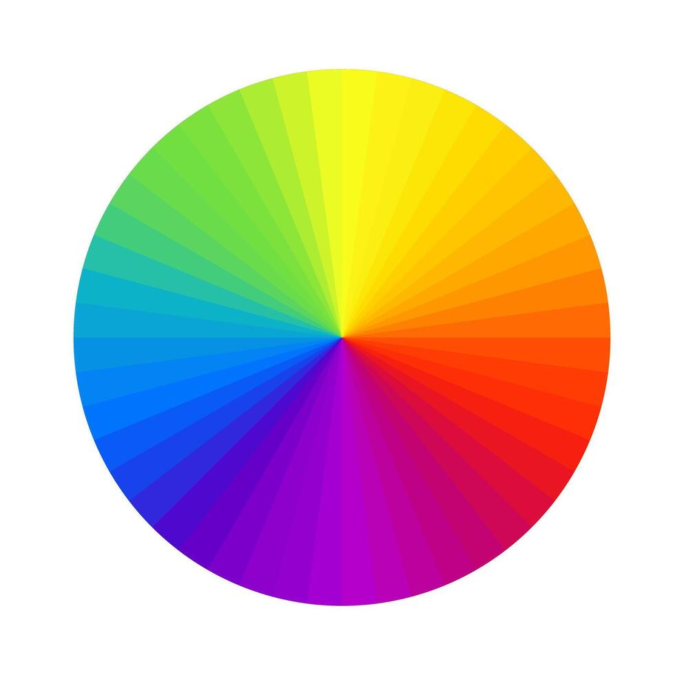

Aqui faço uma revisão sobre as Aulas 1, 2 e 3
As aulas são referentes ao capítulo 13 do Curso de html5 e css3 - Módulo 2
Aprendemos nestas aulas sobre psicologia das cores e suas harmonias
As cores são um elemento fundamental no design e na comunicação visual. Elas podem transmitir emoções, criar atmosferas e influenciar a percepção das pessoas. Existem várias teorias e sistemas de cores que ajudam a entender como as cores funcionam e como combiná-las de maneira eficaz.
Segundo o especialista, Neil Patel, em seu artigo "Como cores afetam conversões" afirma que as pessoas levam cerca de 90 segundos para decidir se querem ou não o produto, e que 90% dessa decisão se baseia na sua cor.
Resumindo, saber escolher uma boa cor e uma boa harmonia de cores, é essencial para a construção de sites e apps.
Exemplo: a cor azul acaba nos remetendo a harmonia, equilíbrio, confiança, profissionalismo, integridade e segurança.
Harmonia de cores
Existem várias formas de criar harmonia de cores, mas as mais comuns são:
- Harmonia monocromática: utiliza variações de uma única cor, criando um visual coeso e suave.
- Harmonia análoga: combina cores adjacentes no círculo cromático, resultando em uma paleta harmoniosa e agradável.
- Harmonia complementar: utiliza cores opostas no círculo cromático, criando um contraste vibrante e dinâmico.
- Harmonia triádica: combina três cores equidistantes no círculo cromático, proporcionando um equilíbrio visual interessante.
Essas são apenas algumas das muitas formas de criar harmonia de cores. A escolha da harmonia certa depende do contexto, do público-alvo e da mensagem que se deseja transmitir.
O que seria o círculo cromático?
O círculo cromático é uma representação visual das cores e suas relações. Ele é usado para entender como as cores se combinam e para criar paletas de cores harmoniosas.
